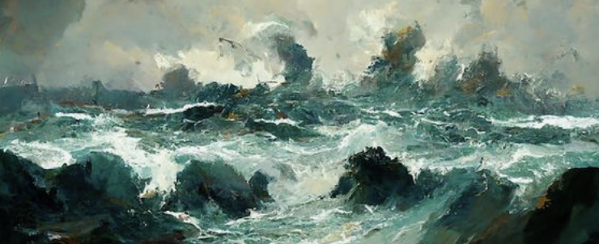

Art Terminology
Oil Painting
CHIAROSCURO: the rendering of forms through a balanced contrast between light and dark areas. The technique that was introduced during the Renaissance and is effective in creating an illusion of depth and space around the principal figures in a composition. Some notable exmaples of painters who used this technique include Leonardo Da Vinci and Rembrandt.
ENCAUSTIC: A painting technique in which the pigment is mixed with melted wax and resin and then applied to a surface while hot.
IMPASTO: A thick application of paint to canvas or other support to emphasize texture and three-dimentionality of the paint rather than a smooth flat surface.

About This Page's Color Scheme
This page mostly uses a monochromatic redish toned color scheme to provide a sense of unity.